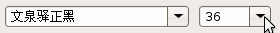
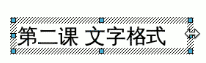
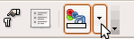
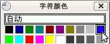

OpenOffice.org 教程之 Impress 演示文稿
作者：TeliuTe 来源：基础教程网
二、文字格式 返回目录 下一课为了更好地修饰内容，我们可以设置文字的格式，包括字体、字号、颜色等等，下面我们来看一个练习；
1、字体和字号
1）启动Impress，点“创建”按钮，新建一个空白文档；
2）点下边“绘图”栏的“文字”按钮， 插入一个水平文本框，输入一段文字“第二课 文本格式”；
3）把文本框拖到上方正中间，然后用拖动选中的方法，拖黑选中里面的文字；
4）在上边的工具栏中点击字体旁边的下拉按钮，在出来的下拉列表中选择“文泉驿正黑”，再点击旁边字号旁边的下拉按钮，选择“36”；

如果文字框太小，可以点击边框，然后拖动右边中间的控制手柄，把文本框拉宽一些；

2、文字颜色
1）颜色在工具栏的右边，图标是彩色的按钮，旁边有个下拉按钮；

2）选中文字，点击彩色旁边的下拉按钮，在出来的面板中选择第一排的蓝色；

3）在幻灯片空白处点一下，这时文字的颜色就设成了蓝色，一般投影上文字多用深色，背景用浅色；
4）再插入一个文本框，输入两行内容“1、字体和字号↙2、文字颜色”（↙表示按一下回车键）；
字体保持楷体不变，把字号为28，颜色设为绿色，拖动文本框对齐摆好，仔细移动可以按键盘上的方向键；
点菜单“演示文稿－幻灯片放映”，放映一下幻灯片，然后关闭返回，以“文字格式”为文件名，保存文件到自己的文件夹；
本节学习了Impress中设置文字格式的基本操作，如果你成功地完成了练习，请继续学习下一课内容；
本教程由86团学校TeliuTe制作|著作权所有
基础教程网：http://teliute.org
美丽的校园……
转载和引用本站内容，请保留作者和本站链接。